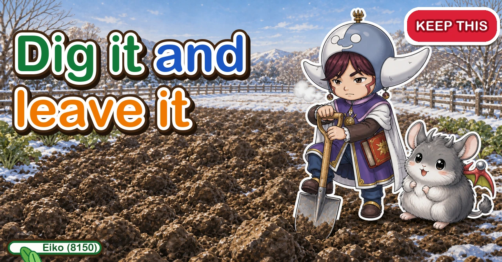
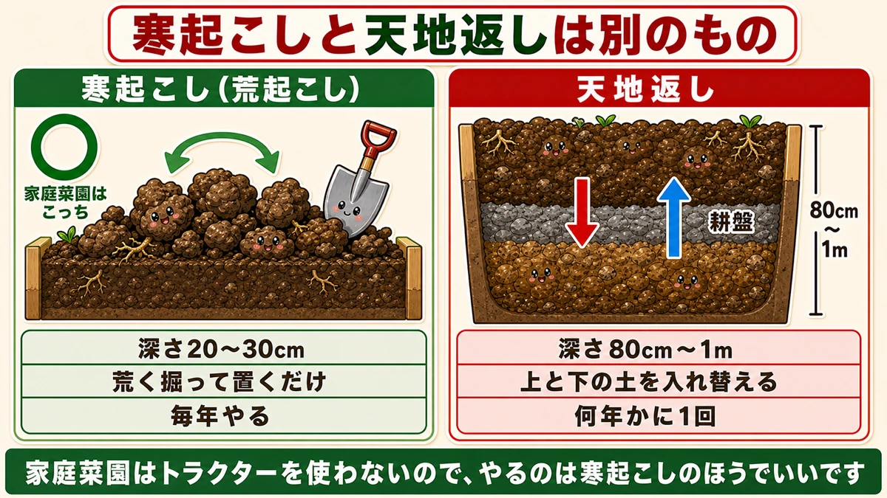
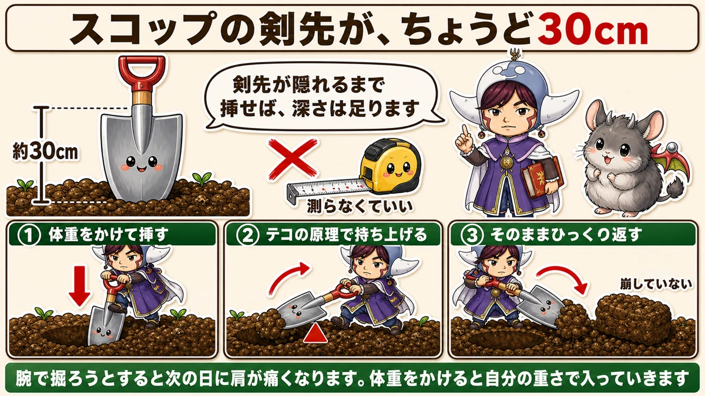
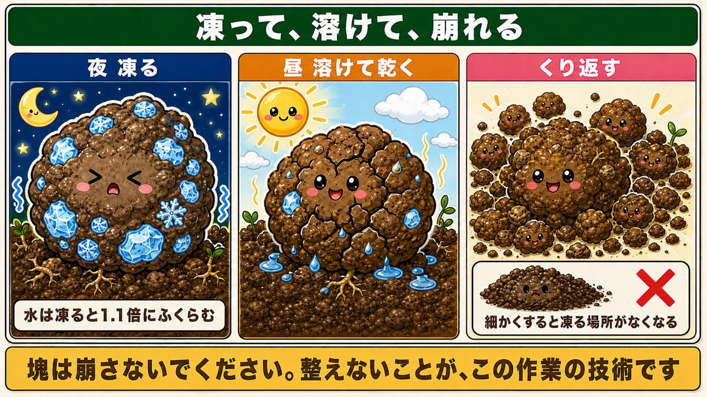
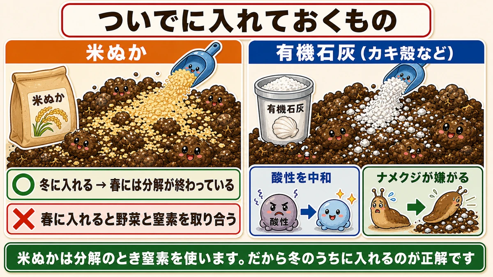

Dig it and leave it ⛄ Cold is the strongest ally a no-spray garden has

🗨️ "There's nothing to do in the garden in winter."
🗨️ "Soil improvement means adding fertiliser, doesn't it?"
🗨️ "Growing in the same spot every year stops working."
Hello, I'm Eiko. Eight years of growing vegetables organically and without pesticides, and a teaching licence in science.
This is the dullest job of the year, and the one that pays best.
The point, up front:
You dig it, and you leave it.
No fertiliser, no machinery, no technique. One spade, turn the soil over roughly, walk away. By spring the bed is crumbly.
And the pests in the soil die.
There's a deadline, too: it stops working once the frosts end ☺️
Rough digging and double digging are different jobs

What this diagram says （図解の文字）
- Rough winter digging and double digging are different things
- Rough digging ○ — home gardens want this one — 20–30 cm deep ／ dig roughly and leave it ／ every year
- Double digging — hard pan ／ 80 cm–1 m deep ／ swap the upper and lower soil ／ once every few years
- A home garden has no tractor, so rough digging is the one to do
Rough winter digging
- 20–30 cm (8–12 in) deep
- Turn it over roughly and leave it
- Every year
- Purpose: loosen the soil, and kill pests
Double digging
- 80 cm to 1 m deep
- Swap the upper soil with the lower soil
- Once every few years
- Purpose: break up a compacted layer
A home garden wants the first one
Double digging is mostly a commercial problem. Cultivating to the same depth with a tractor year after year compacts the soil just below the blade into a hard pan that roots can't pass. Hence digging deep every few years to break it.
You don't use a tractor, so that layer doesn't readily form. Rough digging is enough.
Digging 80 cm by hand is genuinely punishing work. Not having to is one of the privileges of a small garden.
How: one spade, and no measuring

What this diagram says （図解の文字）
- A spade blade is about 30 cm
- Push it in until the blade is buried and the depth is right — × no need to measure
- ① put your weight on it ② lever it up ③ turn it over as it is
- — not broken up —
- Dig with your arms and your shoulders hurt tomorrow. Put your weight on and it goes in under its own weight
The spade is the ruler
A spade blade is about 30 cm long. So push it in until the blade disappears and you have the depth. No tape measure. The tool is its own ruler.
Three movements
- Put your body weight on the spade until the blade is buried
- Pull the handle towards you and lever the soil up
- Turn it over and set it down beside the hole
Repeat, working backwards, a row at a time from one end of the bed.
Don't force it. With your weight on it, a spade sinks under its own weight. Try to dig with your arms and your shoulders will tell you about it the next day — which is exactly what everybody does in their first year.
Don't break the clods
The most important part.
Leave the turned soil as big rough lumps. Do not rake it level.
Gardening generates an urge to tidy — to hit the clods with a fork until they're fine and flatten the bed.
Don't. It works better lumpy.
Why it ends up crumbly

What this diagram says （図解の文字）
- Freeze, thaw, crumble
- Night: it freezes — water expands by 1.1× when it freezes
- Day: it thaws and dries — and repeats
- × broken up fine, there's nowhere left to freeze
- Don't break the clods. Not tidying it up is the technique
Ice grows inside the soil
Every day in a winter garden:
- night falls, and the water in the soil freezes
- the sun comes up, the ice melts and the surface dries
- night again, and it freezes again
And water expands when it freezes — by about 1.1×. A liquid that gets bigger when it solidifies; water is an unusual substance.
So ice is growing inside each clod and pushing it apart from within.
Repeated dozens of times, the clods crumble away — and they crumble in a way no tool produces. The particles are a different shape from soil smashed with a fork.
Which is why fine cultivation ruins it
You can see it coming: break the soil down fine and there's nowhere left for ice to form.
A large clod has a big surface area, is chilled from outside, and holds water inside — freeze, thaw, freeze. The more cycles, the more it crumbles.
Make it fine at the start and none of that happens. Not tidying it up is the technique.
The pests die — the heart of no-spray growing
The insects that ate your roots in summer are not dead in winter. They're asleep in the soil as larvae or eggs.
- Cutworms — they chew through a transplant at the base. A plant lying flat in the morning is this
- Chafer grubs — they eat roots, and they're common in container compost too
They come out when it warms and do the same thing again. Which is why the same damage appears in the same place every year.
Bring them up and expose them
Rough digging brings the ones below up onto the surface. Then:
- the cold wind kills them
- birds find them and eat them
In my garden the starlings turn up the day after I dig, working over the turned soil. Clearly a feast.
Reducing soil pests without a single drop of spray. Cold is the strongest ally a no-spray garden has.
What to add while you're there

What this diagram says （図解の文字）
- What to add while you're at it
- Rice bran — ○ added in winter → decomposition is finished by spring ／ × added in spring it competes with the crop for nitrogen
- Organic lime (oyster shell etc.) — neutralises acidity ／ slugs dislike it
- Rice bran uses nitrogen as it breaks down. Which is why winter is the right time
Rice bran goes in during winter
Scatter rice bran over the turned clods. It's food for soil microbes, and the soil improves as it is broken down.
One important caveat: breaking it down consumes nitrogen.
This is nitrogen drawdown: while decomposition is under way, the microbes take the soil's nitrogen. Plant a crop into that and the crop goes short.
So winter is the correct time. Two or three months of decomposition finishes before planting. Added in spring, it competes with your vegetables.
Organic lime also deters slugs
Worth adding organic lime (crushed oyster shell and similar), for two reasons:
- Every rainfall nudges the soil towards acid. Lime neutralises that
- Slugs prefer acid soil. Neutralise it and they're less comfortable
Dolomitic lime also neutralises, but organic lime acts more gently, so it's harder to overdo. For no-spray growing I'd choose it.
Variations
In containers
You can do exactly this without a garden. Tip the container compost out onto a tray or newspaper, leave it in lumps, and stand it outside for the winter.
Container compost after one season has collapsed particles and poor drainage. Freezing it and letting it break apart restores the structure. I do this with all my spent containers each year, on the north-facing balcony — it freezes better there, so it's the better spot.
Where crops are still growing
Onions, garlic and broad beans are in the ground and obviously can't be dug. Just do the empty areas. There's no need to do the whole garden.
In my garden the empty ground in winter is where the summer crops were. I dig that, and plant potatoes and summer crops there. The onion section gets worked after it's harvested.
If the same spot keeps underperforming
Growing the same crop in the same place gradually stops working — replant problems. One cause among several is specific pathogens and pests accumulating in the soil.
Rough digging doesn't solve that outright. It does reduce the rate of accumulation — each year's exposure to cold takes a little off. It's the accumulation over several years that shows.
The deadline
Once the hard frosts stop, it stops working.
- Deep winter — the ideal window
- Late winter — last chance
- After the frosts end — little point
Simple enough: without freezing and thawing, you've just turned some soil over.
And if you miss it, there's next year
The nice thing about this job is that it can't be done wrong. Dig, and leave. There's no technique to get backwards.
And you do it every year. The second year is better than the first, and the third better again.
To sum up
- ✅ Rough digging is dig-and-leave. No fertiliser, no machinery
- ✅ Rough digging 20–30 cm / double digging 80 cm–1 m. A home garden wants the former
- ✅ A spade blade is about 30 cm — bury the blade and the depth is right
- ✅ Weight on, lever up, turn over
- ✅ Don't break the clods. Fine soil has nowhere to freeze
- ✅ Freezes at night, thaws by day. Water expands 1.1× and breaks the clod from inside
- ✅ Water in the late afternoon to force a freeze
- ✅ Cutworms and chafer grubs come to the surface and are killed by cold or eaten by birds
- ✅ Rice bran in winter — in spring it competes with the crop for nitrogen
- ✅ Organic lime neutralises acidity and discourages slugs
- ✅ The deadline is the end of the frosts
You don't have to do all of it. Take one empty corner and put a spade in once. When the blade disappears, lever it up. That's today's work done ⛄
Thank you for reading!